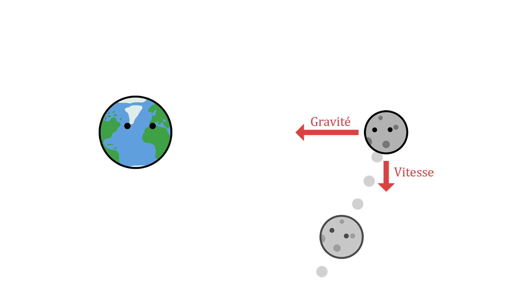

Une première explication
Parmi toutes les interprétations un peu farfelues que l’on peut trouver pour expliquer cela, se cache une explication bien scientifique. Vous avez forcément déjà entendu parler des forces ! Ces choses invisibles et pourtant omniprésentes concernent absolument tout ce qui nous entoure. Il existe beaucoup de forces différentes, mais c’est la force d’attraction gravitationnelle - ou en plus court - la gravité, qui nous intéresse. On l'expérimente tous les jours : c’est elle qui est responsable du fait que les objets s’attirent entre eux. Elle est générée par tout ce qui possède une masse, c'est-à-dire par nous, par les planètes, ou encore par notre tartine de confiture. Son expression est la suivante :
$$F=G\frac{m_A\times m_B}{d^2}$$
Toutes les choses qui ont une masse interagissent donc entre elles et s’attirent, à l’image du Soleil qui attire les planètes ou encore de notre Terre qui attire la Lune. Ainsi, ce qui empêche la Lune de s'évader dans l’espace c’est cette force d’attraction gravitationnelle exercée sur elle par la Terre !
Mais du coup, si la Lune est constamment attirée par la Terre, comment se fait-il qu’elle ne s’écrase pas à sa surface ?
En effet, force est de constater que malgré cette attraction gravitationnelle permanente la Lune reste fièrement hissée à 400 000 km de haut ! Inutile de faire durer le suspens plus longtemps : si elle parvient à rester en l’air c’est grâce à sa vitesse. Comme on le sait, la Lune gravite autour de la Terre selon une orbite elliptique à une vitesse d’environ 3 683 km/h. Du fait de son mouvement, cette dernière ne va pas tomber en ligne droite sur la terre, mais plutôt en suivant une courbe parabolique ! C’est exactement comme sur terre lorsque l’on lance quelque chose : la trajectoire de chute va dépendre de la vitesse que l’on donne à l’objet.
Pour en revenir à notre Lune, puisqu’elle se déplace selon une trajectoire incurvée, elle ne va pas s'écraser sur notre planète mais elle va passer à côté. C’est un peu comme si elle la ratait finalement. Heureusement dans notre cas la Lune ne part pas très loin puisqu'elle est toujours soumise à la force de gravitation. Elle sera donc attirée encore et encore par la Terre, et du fait de sa vitesse elle tombera à côté encore et encore, comme le schématise la petite figure ci-dessous.

Pour mieux visualiser ce principe, vous pourrez trouver sur cette page une petite application permettant de voir les différentes trajectoires d’un satellite en fonction de sa vitesse.
Pour une explication plus rigoureuse
Il est important de souligner que l'explication que vous venez de lire a pour but de faire comprendre les concepts. Pour une explication un peu plus rigoureuse et mathématique, il faut se tourner une fois encore vers le domaine des forces et s'intéresser à la force centrifuge.
Attention, on précise bien que cette autre explication est strictement équivalente à la première que nous avons donnée !
Ainsi, la force centrifuge est quelque chose d’assez simple qui s’applique à tout objet ayant une vitesse et une trajectoire elliptique par exemple. Elle a pour effet de projeter vers l'extérieur l’objet auquel elle s’applique. Appliquée à notre Lune, cette force va donc la projeter vers l'extérieur. Elle s'oppose de cette façon à la force d’attraction gravitationnelle qui cherche à attirer la Lune. Finalement, la Lune se trouve à la fois attirée par la Terre mais aussi arrachée de son attraction. Puisque aucune des deux forces ne triomphe, un équilibre s’installe et la Lune reste donc en orbite autour de la Terre, sans risquer de s'échapper ou de s'écraser.
Détails sur l'équation...
Comme on le sait, la Lune gravite autour de la Terre selon une orbite elliptique à une vitesse d’environ 3 683 km/h ce sont ces deux choses qui génèrent une force, appelée force centrifuge, dont l’expression est la suivante :
$$\vec{F_{ie}}=-m\vec{a_e}=-m\left[\vec{a}\left(A\right)_R+\left(\frac{d\Omega_{R^\prime/R}}{dt}\right)_R\land\vec{AM}+\Omega_{R^\prime/R}\land\left(\Omega_{R^\prime/R}\land\vec{AM}\right)\ \ \right]$$
Bien que cette formule soit un peu barbare, la force centrifuge est quelque chose d’assez simple. Elle a pour effet de projeter vers l'extérieur l’objet auquel elle s’applique. On peut prendre comme exemple la prise d’un virage en voiture : les passagers dans l’habitacle qui ont donc une certaine vitesse et une trajectoire inclinée vont s’écraser contre les paroies, et c’est justement à cause de cette force !